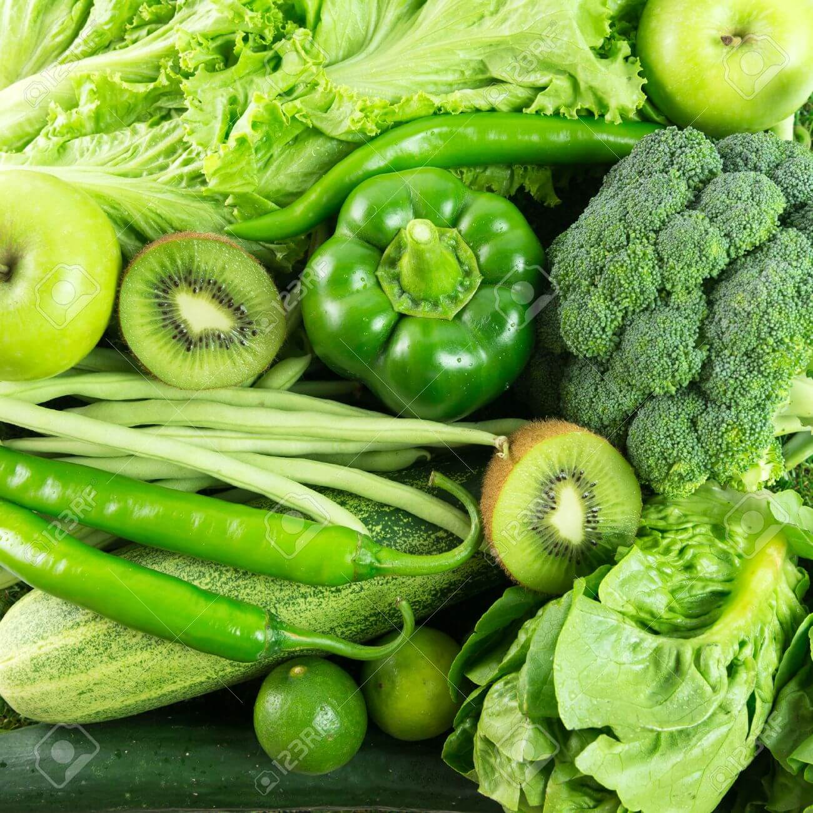
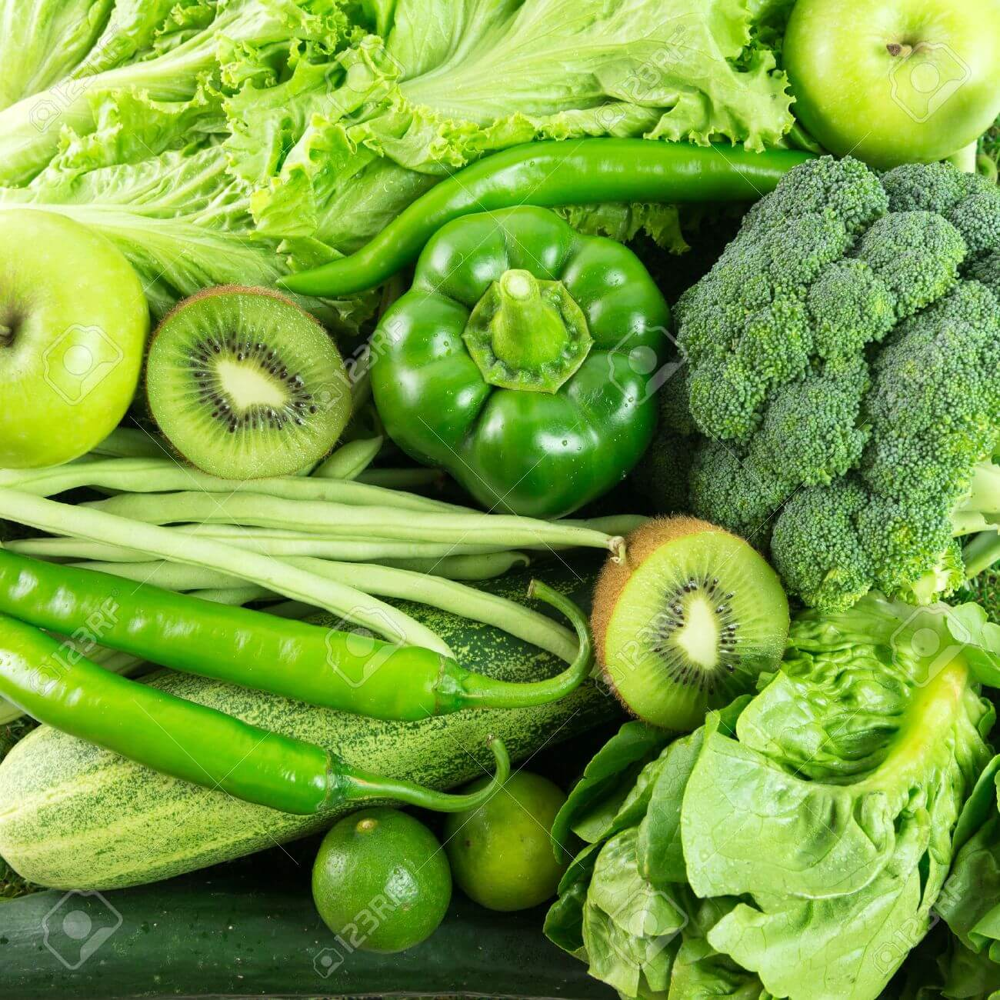
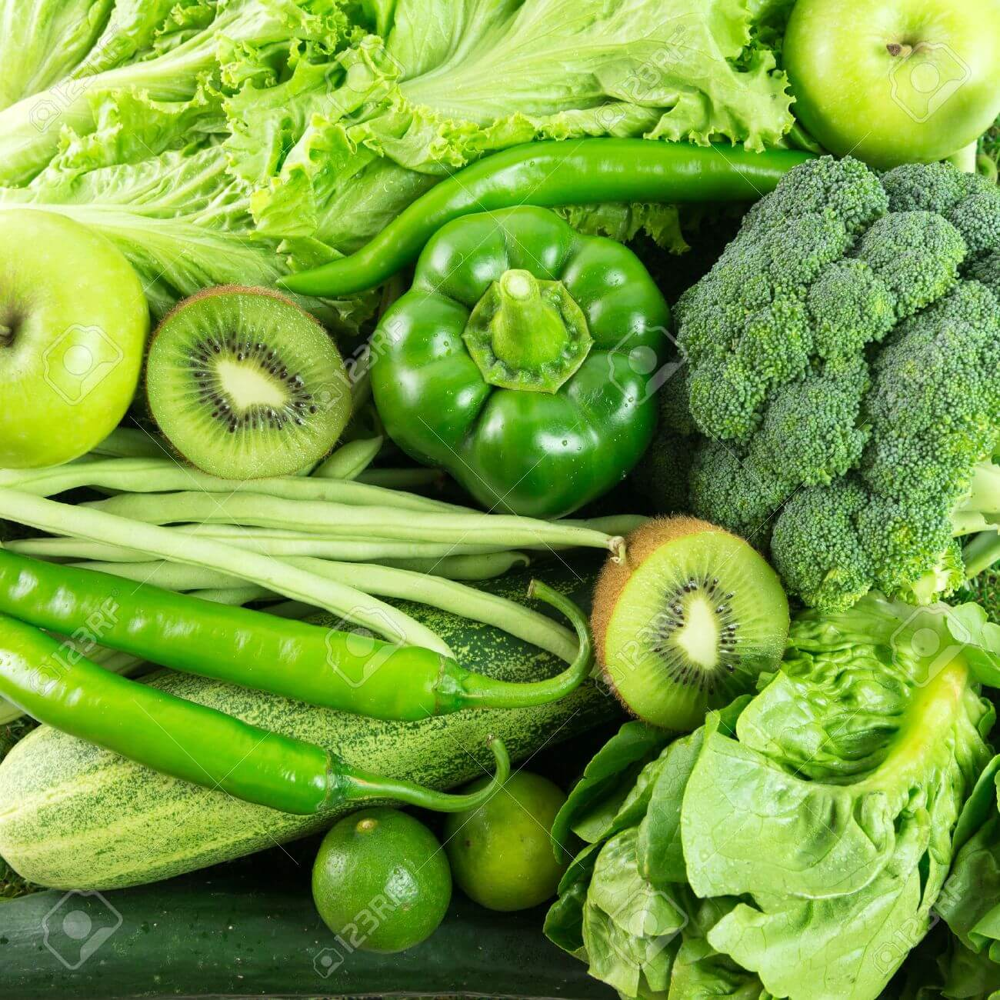

Bienvenido a nuestro espacio dedicado a la salud a través de la alimentación. En un mundo repleto de opciones, es esencial tomar decisiones informadas para mantener un estilo de vida saludable y equilibrado.
Nos comprometemos a proporcionarte información valiosa sobre los alimentos que pueden impactar positivamente tu salud. No solo se trata de identificar lo dañino, sino también de resaltar la importancia de incorporar alimentos verdaderamente beneficiosos en tu dieta diaria.
En este viaje hacia una vida más saludable, encontrarás artículos informativos, recetas saludables y consejos nutricionales que te empoderarán para tomar el control de tu alimentación y mejorar tu bienestar general.
Creemos en el poder curativo de los alimentos. Cada bocado es una oportunidad para nutrir tu cuerpo y alcanzar un estado óptimo de salud. A través de nuestra plataforma, te guiaremos para que descubras cómo pequeños cambios en tu dieta pueden tener un impacto significativo en tu vitalidad a largo plazo.
Si alguna vez te preguntas qué alimentos son los mejores para ti o necesitas orientación sobre tus elecciones alimenticias, estamos aquí para ayudarte. Tu salud es nuestra prioridad, y estamos comprometidos a inspirarte a adoptar hábitos alimenticios que te ayuden a sanar y prosperar.
¡Descubre un nuevo camino hacia el bienestar!

© 2023 Come para sanar. Todos los derechos reservados.